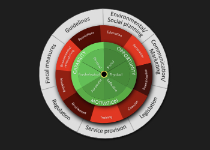

Mortgage Loss Mitigation
Revamp loss mitigation training
Storyline, AI, Premiere, Excel
Microlearning modules paired with AI scenarios
Commercial Cleaning
Orientation to Cleaning Chemicals
Storyline, Filmora, Illustrator, After Effects
Knowledge of Chemicals and Their Cleaning Function

Behavior Change Wheel
Quick guide to behavioral interventions
HTML, CSS, JavaScript, xAPI
Interactive one-page behavior change wheel app